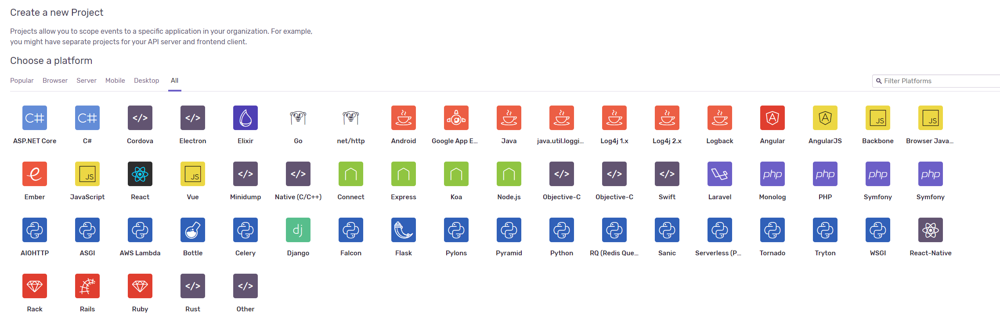
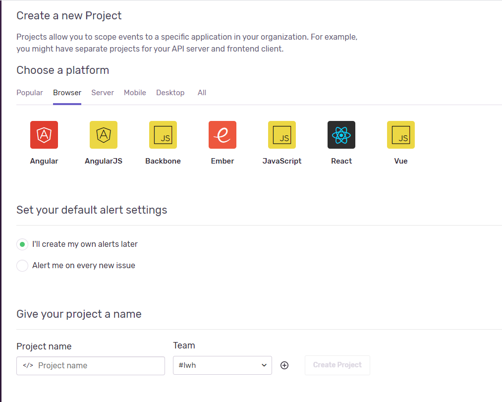
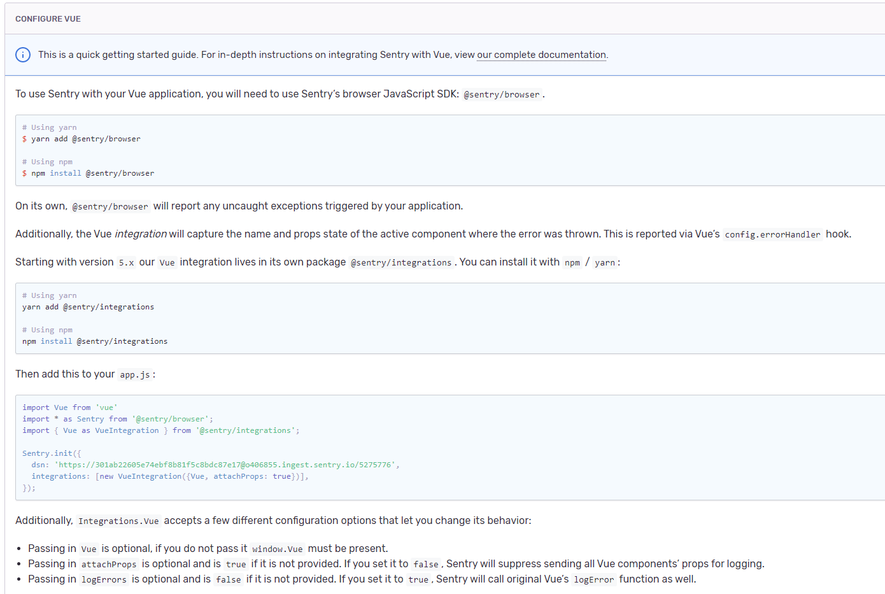
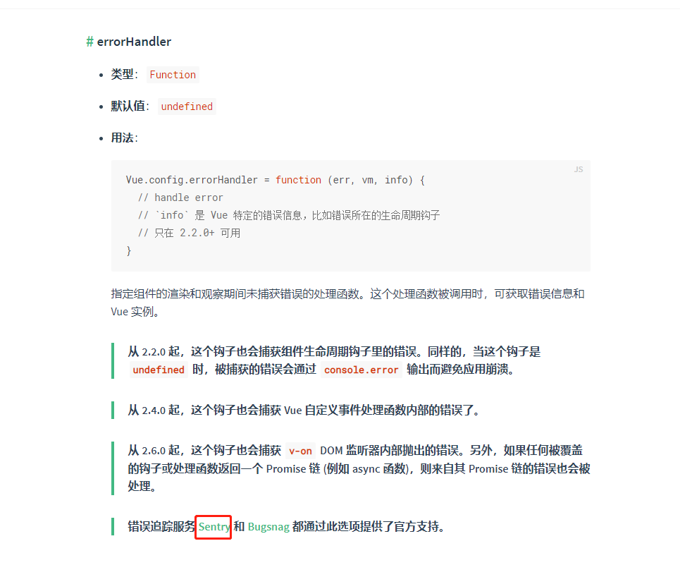

前言
作为一名前端，不知道大家是否有遇到过如下的情况：
客户or测试：为什么我这个页面不显示数据啊？？？
我 ：（立马打开网站），我这边显示是正常的啊，你是不是操作有问题啊？
客户or测试：没有啊，我就是正常的查询操作啊，没干其他的，怎么就看不到数据啊？
我：（语无伦次），可是我这边是显示正常的啊，控制台也没有报错啊！
客户or测试：BALABALA
相信各位小伙伴会经常遇到这样子的问题，明明自己本机打开一切正常，但是到了转测甚至版本上线的时候却出现一大堆的问题，还根本定位不到问题，总不能叫客户打开F12查看控制台看下报了什么错误吧！由此，基于这种场景本次分享聊一聊关于前端实时监控并收集错误日志的方案，以及在这其中的一些体会。
前端监控系统方案
出于成本的考虑，在选定的方案中不考虑自行规划定义一套完善的监控系统，由此优先考虑现有市面上的监控系统（阿里ARMS、fundebug、sentry）
- 阿里ARMS：阿里的一个前端数据监控服务，收费，收费，收费！
- fundebug：目前看到的较为完善的前端错误日志服务，但是很可惜，还是要收费、收费、收费！
- sentry：github上的一个开源项目，支持多端的错误监控，重点是可以本地部署，那就意味着免费、免费、免费！
针对于现有的业务需求，可不必考虑其他的收费监控系统，使用sentry就可满足现有需求。
什么是Sentry？
Sentry是一个开源的实时错误监控项目，支持多端的配置，包括前端，后端，移动端，游戏端。支持的语言也是很丰富的，基本目前主流的语言都支持。并且，它还可以集成在gitlab上，这对于我们使用gitlab作为代码仓库来说，无疑是增强了我们的工具链。

Sentry搭建
Sentry搭建目前官方给出的两种部署方案分别是Docker部署和Python，Docker在这之前用的也比较多，所以我搭建Sentry平台使用的是Docker部署，具体的部署教程可参照我之前写的文章，Sentry环境搭建，这里就不再过多的赘述。
创建项目
为了方便演示，我们直接使用官方的线上服务来操作一下。
1、创建项目

2、初始化配置

3、配置完成后我们就可以开始写bug了。 ^ ^
由于，我们在创建项目的时候是使用vue作为监控平台，所以在我们引入的依赖中已经主动劫持vue.config.errorHandler。详见链接

那么现在问题来了，前端的错误有那么多，有些错误本来就是可能存在的，有些错误又是不该存在，我们不能一股脑的将所有的错误都上传到平台上吧，这样子会显得很多余。像接口正常返回异常，接口不存在，这种错误直接在页面中给用户做提示就好了，就没必要上传到平台上去了。为此，我们在做错误监控的时候还需要识别错误类型，什么样子的错误是应该上传到平台上去的，什么是可以不用上传到平台上去的。
这里我简单的做个分类：
- js语法错误、代码异常
- http请求异常（5xx）
- 静态资源加载异常
- 后端返回数据格式不符合规范导致的js报错
- Iframe异常、跨域问题
- 页面崩溃和一些性能方面的指标异常
Sentry常用的API、参数及上报插件
参数：
- DSN：项目地址，异常错误上传的平台地址
- debug：是否开启debug模式，如果开启了，那么异常的信息就会打印在控制台上
- release：代码版本号，这个很重要，在之后我们手动上传sourcemaps的时候，可以映射到源码。方便我们在平台上就能查看到源码定位报错的原因。
- environment：环境名称
- beforeSend：上报日志前的操作，可以对异常进行分类以及打标签
api：
- captureException(exception):捕获一个js异常，传入一个exception对象或者类对象。
- captureMessage(message,level):捕获一条信息，传入信息内容和信息级别。
- configureScope((scope)=>{}):设置context信息到scope上面。
- withScope((scope)=>{}):设置一个临时的scope信息到context上面。
- setUser({}):设置用户信息。
- setTag():设置标签，方便后台查找的时候更快定位出来。
- setLevel():标记事件的严重性。